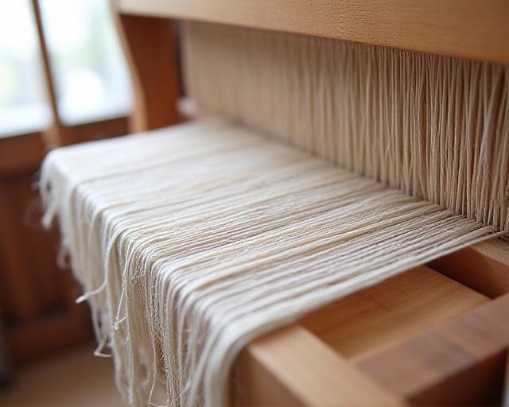

Preserving the Art of the Loom in the Heart of New York
At LoomLore Academy, we don't just teach weaving; we safeguard a heritage. Our mission is to bridge the gap between ancient tactile wisdom and modern textile innovation. You'll find that our curriculum isn't just about threads—it's about the narrative woven into every fabric.
Don't you think the world needs more things made to last? Our studio at 937 Onderdonk Avenue serves as a sanctuary for those looking to master the intricate dance of warp and weft.

Philosophy & Impact
17 Years of Excellence
What started as a small workshop in a Brooklyn loft has grown into New York's premier destination for textile art. We've mentored over 2,400 students, from curious hobbyists to professional designers working for major fashion houses.
Sustainable Practices
We're deeply committed to the planet. Our courses emphasize organic dyes and ethically sourced fibers. We believe beautiful art shouldn't come at the cost of our environment.
Global Faculty
Ancient Lore
Our Textile Journey
2007: The First Thread
Founded in a modest studio, LoomLore Academy began with a single mission: to ensure that traditional loom techniques didn't vanish in the digital age. Our first class had only four students, but the passion was palpable.
2015: Expanding the Spectrum
Recognizing the shift in the industry, we integrated advanced modern techniques including 3D weaving structures and smart textile applications. Why stay in the past when the future is so colorful?
Today: The New York Hub
Now settled in our permanent home on Onderdonk Avenue, we serve as a beacon for sustainable textile practices. Our faculty includes master weavers and chemical engineers specializing in natural pigments.
Voices of the Loom
"The depth of knowledge at LoomLore Academy is staggering. I came for a weekend workshop and stayed for a year."
Yua Apazidis
Why did we choose LoomLore Academy? Because their approach to fabric history is unmatched. As an archivist, I found their technical precision combined with historical context to be exactly what my career needed. It's rare to find such mastery in NYC.
Fernely Shikata, Senior Textile Conservator